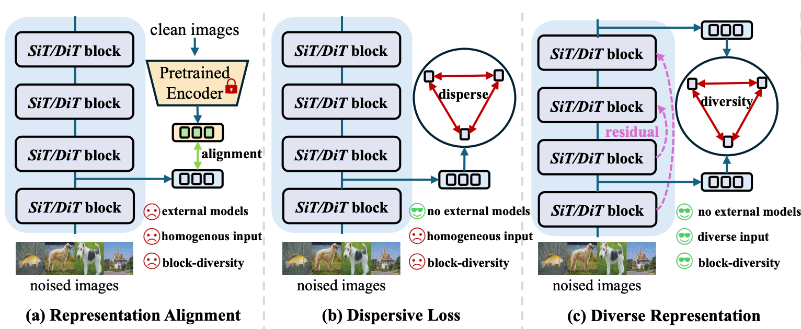
Recent breakthroughs in Diffusion Transformers (DiTs) have revolutionized the field of visual synthesis due to their superior scalability. To facilitate DiTs’ capability of capturing meaningful internal representations, recent works such as REPA incorporate external pretrained encoders for representation alignment. However, the underlying mechanisms governing representation learning within DiTs are not well understood. To this end, we first systematically investigate the representation dynamics of DiTs. Through analyzing the evolution and influence of internal representations under various settings, we reveal that representation diversity across blocks is a crucial factor for effective learning. Based on this key insight, we propose DiverseDiT, a novel framework that explicitly promotes representation diversity. DiverseDiT incorporates long residual connections to diversify input representations across blocks and a representation diversity loss to encourage blocks to learn distinct features. Extensive experiments on ImageNet 256 × 256 and 512 × 512 demonstrate that our DiverseDiT yields consistent performance gains and convergence acceleration when applied to different backbones with various sizes, even when tested on the challenging one-step generation setting. Furthermore, we show that DiverseDiT is complementary to existing representation learning techniques, leading to further performance gains. Our work provides valuable insights into the representation learning dynamics of DiTs and offers a practical approach for enhancing their performance.
We systematically analyze representation dynamics in Diffusion Transformers. Below we summarize our main observations that motivate DiverseDiT.
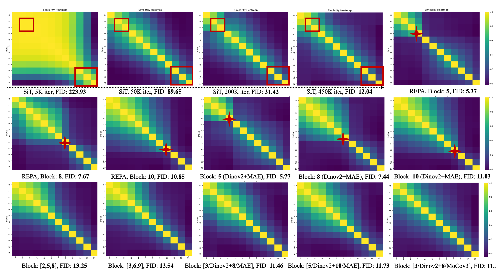
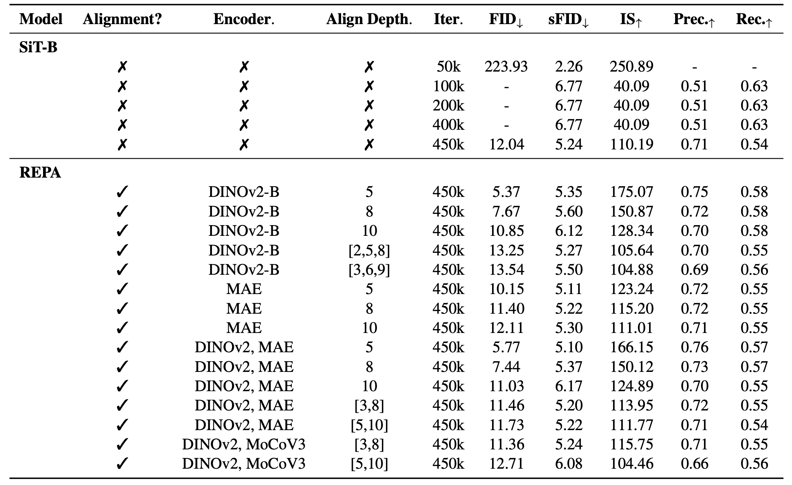
The similarity heatmaps of SiT at different training steps (5K, 50K, 200K, 450K) show a clear trend of increasing representational diversity. Specifically, the heatmap becomes more diagonal as training progresses, and the representation between different layers becomes less similar. Intuitively, different blocks specialize and develop more distinct and complementary representations. Such observation aligns with the broader understanding that deep models learn hierarchical representations.
The REPA heatmaps exhibit more distinct (less similar) patterns around the red mark compared to the corresponding regions in the SiT heatmaps, indicating that aligning specific blocks significantly increases the dissimilarity between the representations of the targeted block and other blocks. Additionally, consistent with REPA, aligning earlier blocks (i.e., Block 5, Block 8) yields better performance than aligning later blocks (Block 10). This demonstrates that external alignment effectively promotes specialization by making the selected block's representation more different from other blocks.
In other words, REPA encourages each block to learn more distinct and complementary features, leading to a more diverse and more effective representation. More importantly, these observations provide insight into why REPA-like external alignment is effective: by enforcing specialization, it prevents representational collapse and encourages the network to explore a wider range of features. This specialization-driven perspective may also explain why aligning with larger models (DINOv2-L, -g) brings only marginal improvements compared to aligning with smaller models (DINOv2-B) in the original REPA.
While REPA with single blocks shows clear differentiation, using multiple blocks for guidance (e.g., Block:[2,5,8], [3,6,9]) does not bring similar improvements to the performance. In some cases, the FID score is even slightly worse (Block [2,5,8]), suggesting that applying guidance to more blocks might counterintuitively reduce the overall diversity between blocks. We hypothesize that this is due to the introduction of conflicting constraints, preventing individual blocks from effectively specializing.
Furthermore, aligning multiple blocks with different external encoders ([5/Dinov2+10/MAE], i.e., aligning DinoV2 features on block 5 and MAE features on block 10) also provides limited benefit and shows limited representation diversity. Such observation further reflects that the representation diversity across blocks is a crucial factor for high-quality synthesis.
Summary. In general, our systematic analysis provides a comprehensive understanding of representation dynamics for DiTs and reveals that the key for representation learning is increasing the discrepancies of block representations. Our findings offer a novel perspective for explaining existing methods, showing how models learn representations during training and highlighting the critical role of block specialization. These observations motivate us to design more effective methods to enhance representation diversity for performance improvement and accelerated training.
Based on the above observations, we propose DiverseDiT to explicitly promote representation diversity. Our framework consists of two main components: long residual connections to diversify block inputs, and a representation diversity loss to encourage blocks to learn distinct features. The overall pipeline is illustrated below.
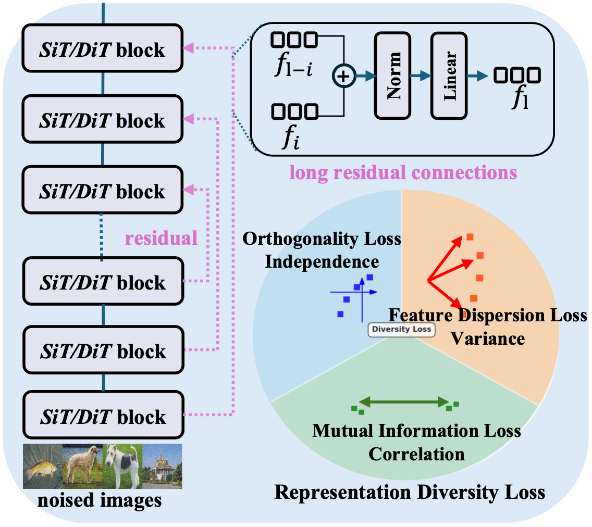
Motivated by our findings on block-wise diversity, we argue that the diversity of inputs for each block also plays a crucial role in shaping the learned representations. However, conventional diffusion transformers often suffer from a lack of input diversity: each block's input is typically homogeneous and derived solely from the output of the preceding layer.
To address this, we employ long residual connections to inject diversity into the inputs of each block. This mechanism selectively injects the output of earlier layers into later layers, promoting feature reuse and preventing representational collapse. Formally, for a model with \(L\) DiT blocks, we connect the \(i\)-th block's output to the \((L-i)\)-th block via
where \(i \in \{0, \ldots, \lfloor L/2 \rfloor - 1\}\), and \(\mathcal{R}_{\text{res}}^i\) denotes the residual connection. Here \(f_i \in \mathbb{R}^{N \times T \times D}\) is the representation of the \(i\)-th block; \(\oplus\) denotes concatenation of \(f_i\) and \(f_{l-1}\), which is then processed by layer normalization and a linear layer. By injecting these skip connections, we break the chain of homogeneous inputs and encourage the network to learn more varied and informative representations from different sources.
To further encourage specialization and promote diversity in the learned representations, we introduce a representation diversity loss that explicitly promotes diverse feature representations within each block. It comprises three components: an orthogonality loss, a proxy mutual-information minimization loss, and a feature dispersion loss. To reduce computational cost, we only consider a subset of block pairs \(\mathcal{P} \subseteq \{(i, j) : i < j,\; i, j \in L\}\).
Orthogonality loss. For each block we define the token-wise mean feature along the \(N\) and \(T\) dimensions as
We penalize high cosine similarity between block-wise mean representations to encourage cross-block orthogonality:
Proxy mutual-information loss. We minimize correlation between block representations via a computationally efficient proxy. We define flattened, \(\ell_2\)-normalized token representations as
The proxy mutual-information loss is
Feature dispersion loss. We encourage diverse channel usage by maximizing the variance of feature activations. The representations of each block are flattened to \(\tilde{f}_l \in \mathbb{R}^{(NT) \times D}\) and normalized along the sample axis to obtain \(\widehat{\tilde{f}}_l\). We compute the averaged activation per dimension \(a = \frac{1}{|\mathcal{P}|} \sum_{p \in \mathcal{P}} \operatorname{mean}_{n,t}(\widehat{\tilde{f}}_l[n, t, :])\), normalize to \(a' = a / \max_k a_k\), and maximize its variance:
Overall loss and adaptive weighting. The overall representation diversity loss aggregates the above three components as
where \(\lambda_{\text{orth}}, \lambda_{\text{MI}}, \lambda_{\text{disp}}\) control the relative weight of each loss; we set them to \(0.33\) by default. In practice, when \(\mathcal{L}_{\text{div}}\) is optimized too small (e.g., close to 0), the model can diverge. We therefore use an adaptive weight \(w\) for \(\mathcal{L}_{\text{div}}\):
This prevents over-separation of representations and helps the model retain meaningful, shared structure across the data.
The table below presents the quantitative results of applying our proposed techniques to SiT and REPA across various model scales on ImageNet 256×256 without CFG. We observe that incorporating our method consistently yields substantial improvements on all evaluation metrics across all model scales, demonstrating its effectiveness and generalization regardless of the underlying training paradigm.
Notably, our method achieves an FID of 17.29 on the REPA-B setting with 400K iterations, which is better than that of SiT-L (i.e., 18.77) with the same training iterations. Similarly, the performance of applying our method on the REPA-L outperforms that of the REPA-XL, i.e., 8.47 vs 8.73 on FID and 123.03 vs 118.68 on IS.
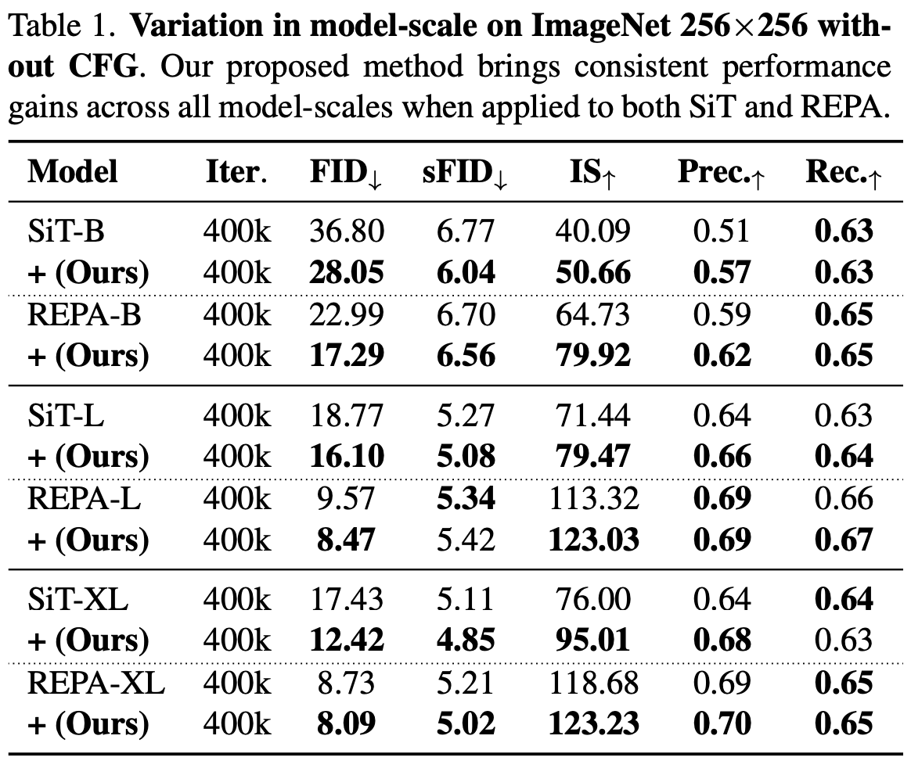
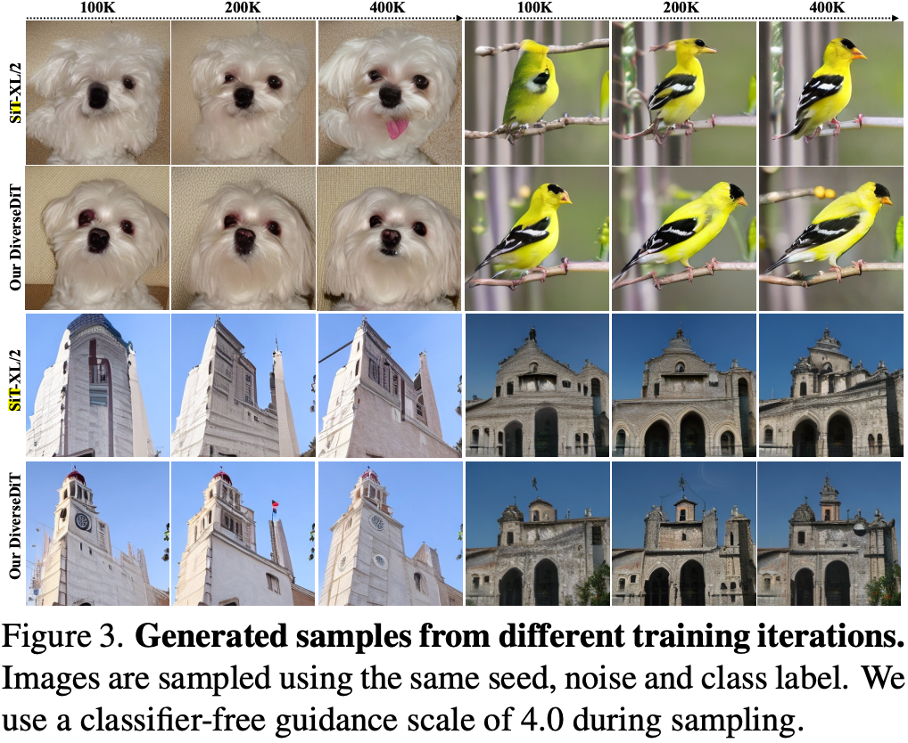
The figure on the right shows the images generated by SiT-XL and our proposed method at different training iterations. Our generated images exhibit more details, better structures, and fewer artifacts, demonstrating that our method leads to faster convergence and higher visual quality compared to the baseline models. That is, our design towards improving the diversity of representations across different blocks contributes to a scalable and efficient learning process.
Table 2 presents the comparison results with recent state-of-the-art (SoTA) methods using CFG on ImageNet 256×256. As can be observed from the table, our method achieves competitive performance compared to SoTA models while requiring significantly fewer training epochs. At 80 epochs, our method attains an FID score of 1.89, outperforming REPA trained for 200 epochs (1.96) and surpassing the performance of several established methods trained for hundreds or even thousands of epochs. For instance, the SiT-XL/2 model requires 1400 epochs to reach an FID of 2.06, while we achieve 1.52 with only 200 epochs. While REG achieves a slightly better FID of 1.36, it requires 800 epochs, four times the training cost of ours.
Table 3 shows the comparison results on ImageNet 512×512. Similarly, our DiverseDiT achieves a comparable FID of 2.21 with only 80 epochs and obtains the best FID score when trained for 200 epochs. The consistent strong performance across multiple metrics, coupled with the significantly reduced training time, shows the efficiency and effectiveness of our model in learning diverse and high-quality representations. Additionally, we provide selected samples generated by our method below (qualitative results); the generated images demonstrate that DiverseDiT produces images with excellent quality.
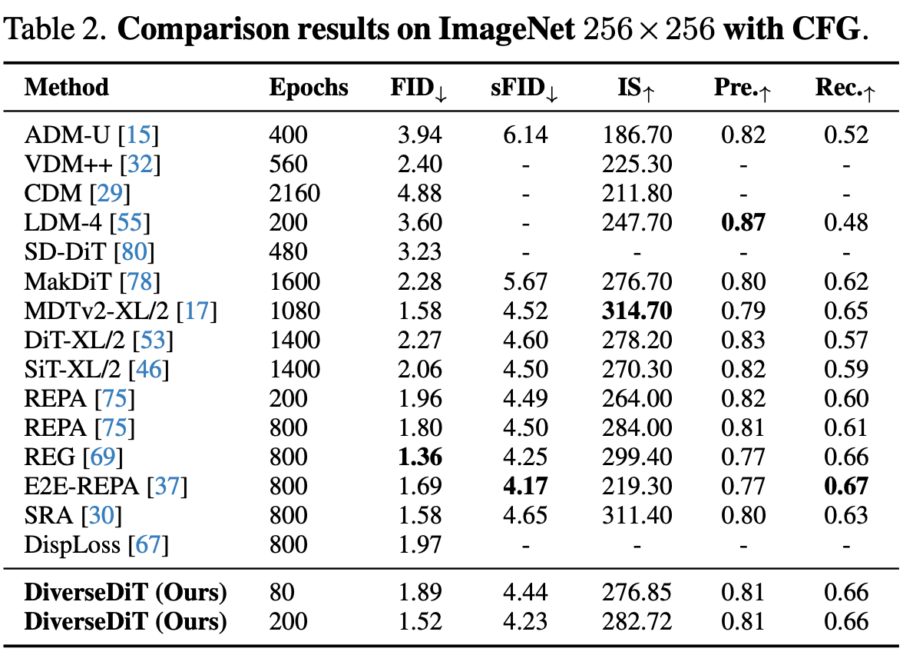
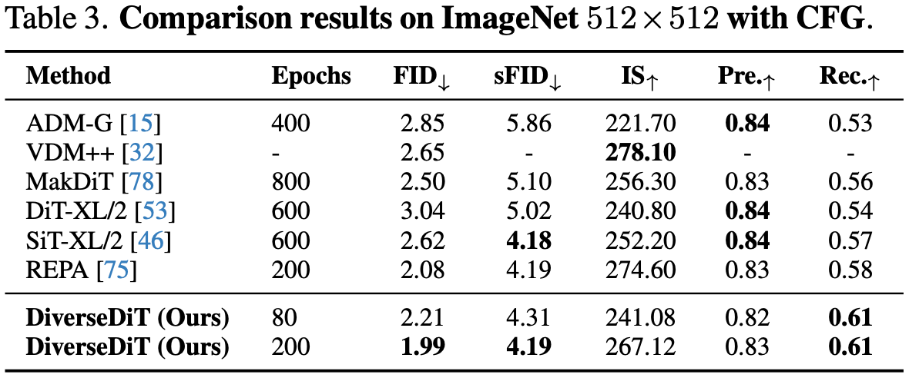
Regarding one-step generation, we applied our proposed techniques to MeanFlow to assess the generalization ability. Table 4 presents the quantitative results across different model scales. Similar to our previous findings, incorporating our method consistently improves the performance with different model sizes, e.g., our method improves the FID score of MF-B/2 from 9.44 to 8.51 and the IS from 152.55 to 158.84.
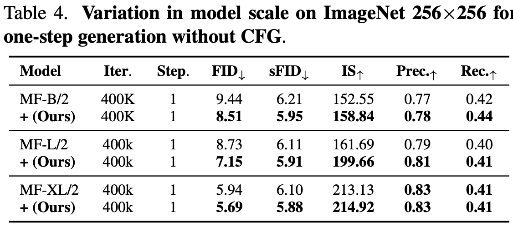
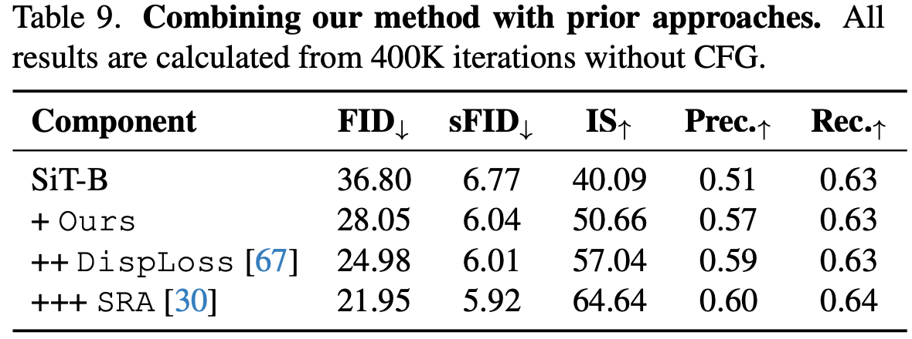
Table 9 shows DiverseDiT's compatibility with DispLoss and SRA, yielding further performance gains. The results demonstrate that our method can be effectively combined with existing approaches for further performance improvements, reflecting the flexibility of our approach. Noticeably, when combining our proposed method with both DispLoss and SRA, we achieve an FID of 21.95, which is better than that of REPA (22.99 in the table above) at the same iterations. Recall that REPA requires external models for representation alignment, while here we do not rely on any external guidance, demonstrating the potential for representation learning through internal mechanisms.
We provide selected samples generated by our DiverseDiT below. The generated images demonstrate that our method produces images with excellent quality, rich details, and coherent structures.
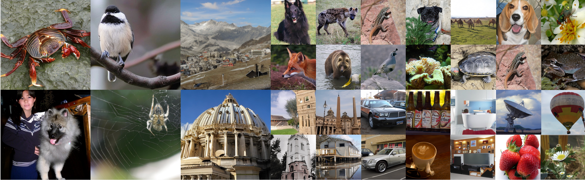